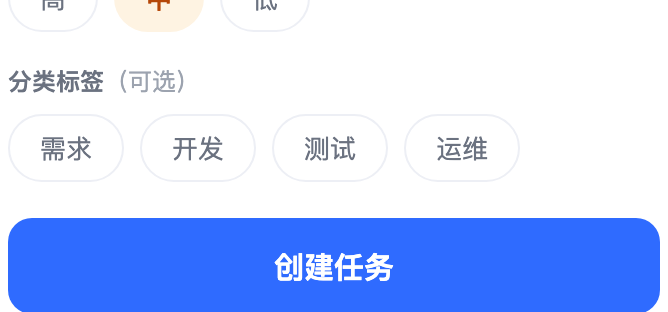

移动端敏捷待办清单 · 产品需求规格说明书 (PRD)
版本标识：f50cca3800ad4570b31e1651fec9b2f30. 评审与发布元信息
- 【专项参与人】：产品 Owner / 移动端前端负责人 / 客户端存储负责人 / 测试负责人 / UI 设计师
- 【发布节点】：
- 预计灰度发版时间：即时（原型确认后第 1 周期）
- 预计应用市场全量上线时间：第 2 周期
- 【项目资料】：已确认版移动端交互原型（单页任务清单原型，含删除确认、清空确认两个浮层）、核心业务流程图原件、需求与业务方案确认记录
- 【更新记录】：
- 本期版本：V1.0 初稿创建完成；操作人：AI 产品工作台；确认人：评审全员
1. 业务背景与 PEA 价值决策
- 【一、用户是谁】：服务对象为 1~5 人小型项目组成员与个人自用者，典型特征是打开即用、不愿注册账号、不愿学习复杂配置，习惯在手机上一次点击记录一件事。
- 【二、解决什么问题】：
- 现有待办工具普遍要求注册登录、强制云同步，首次使用就要跨过账号门槛，轻量记录场景下成本过高。
- 记录一条任务往往需要跳转新建页、填写多个字段，动辄 5 步以上，用户在路上、会议中想快速记一条时容易被劝退。
- 任务积累后，用户看不清整体推进进度，也难在「待办 / 进行中 / 已完成」之间快速聚焦，长列表翻找耗时。
- 本地无网络的场景（地铁、出差）下云同步类工具直接不可用，任务记不下来。
- 【三、专项核心指标】：
- 单次任务创建耗时 ≤ 3 秒（从聚焦输入框到列表中看到新卡片）。
- 本地写入成功率 ≥ 99.9%，应用退出重进后数据还原成功率 100%。
- 状态推进点击响应 ≤ 100 毫秒，列表与统计面板同步刷新无可见延迟。
- 误删率 ≤ 0.1%（删除操作须经二次确认拦截）。
- 【四、策略逻辑】：采用「极简本地闭环，无干扰即开即用」策略——不做账号、不做网络请求、不做多端同步，把全部价值压缩到一个页面里完成记录、推进、查看、清理四件事。判断依据是反问「这是否真正消费者导向」：用户要的是把事记下来并且不丢，而不是先填一张注册表。
- 【五、决策反问（马斯克五步法自查）】：
- 质疑需求了吗：确认了用户真实诉求是「低摩擦记录 + 进度可见」，而非「更强大的项目管理能力」；多人协作、子任务、日历提醒均为场景外需求。
- 删除不需要的了吗：本期剔除账号体系、云端同步与跨设备迁移、任务指派与评论、子任务与依赖关系、日历视图与消息提醒、自定义标签管理后台、数据导出备份、搜索功能。
- 还可以优化或简化吗：核心链路压缩为「输入标题 → 点创建」两步，优先级默认选中「中」、标签可选可不选；状态变更压缩为「点一下」，不进入详情页。
- 还可以加速吗：所有数据读取与写入走浏览器本地存储，无网络往返；首次启动以骨架屏占位消解等待感；状态推进后仅刷新统计数字与单个卡片，不做整页重绘。
- 可以自动化吗：任务总数、进行中、已完成、完成率与进度条由系统自动计算并即时同步；已完成任务自动置灰、加删除线并沉底，无需用户手动整理。
- 【六、对标先进】：对标同类优秀轻量敏捷工具的极简设计——单页承载全部操作、状态以一次点击推进、已完成内容自动退居次要位置，不引入任何弹窗向导与引导流程。
2. 核心业务流程

图：完整原型页面总览
图：核心业务流程流转图
业务流程流转说明
（此处内嵌：原型界面总览大图 + 核心业务流程图）
- 【操作主路径】：打开应用 → 自动读取本地任务数据 → 顶部查看统计与完成率 → 在创建区填写标题、选择优先级与分类标签 → 点击创建 → 新任务出现在未完成区顶部 → 点击状态按钮由「待办」推进到「进行中」再到「已完成」 → 已完成卡片置灰加删除线并沉底 → 统计面板与进度条实时刷新 → 需要时通过「重新打开」恢复任务或通过删除 / 一键清空清理数据。
- 【关键分支与控制】：
- 标题为空或纯空格 → 拦截创建，输入框下方提示「请输入任务标题」。
- 标题超过 30 字符 → 输入框拒绝继续输入，计数变为上限警示态。
- 同一任务 300 毫秒内重复点击状态按钮 → 只生效一次，防止一跳到顶。
- 在某一状态筛选下把任务推进到其他状态 → 该任务淡出当前列表，统计同步更新。
- 无已完成任务时 → 「一键清空已完成」置灰不可点。
- 本地数据读取失败 → 清空后按新数据渲染并顶部提示；写入失败 → 界面操作照常生效并顶部提示。
3. 功能详细规约（一个功能对应一个截图 · 左右对照）

图：功能 1：任务快速创建 界面特写
功能 1：任务快速创建
- 【界面对应】：任务清单主页中部的创建表单卡片（标题输入框 + 字数计数 + 优先级选择 + 分类标签选择 + 创建按钮）。（配图：原型局部特写 — 创建表单区）
- 【业务逻辑与规则】：
- 标题为必填，最长 30 字符；中文、英文、数字、emoji 均按 1 个字符计数，提交前自动去除首尾空格。
- 优先级为「高 / 中 / 低」单选，默认选中「中」；分类标签为「需求 / 开发 / 测试 / 运维」单选，可不选，默认不选。
- 点击创建后任务按「待办」状态写入，插入未完成区最上方（按创建时间倒序排列），列表自动滚动到顶部，新卡片播放一次高亮渐隐动画。
- 创建成功后表单立即重置：标题清空、优先级回到「中」、标签取消选中、错误提示清除；数据同步写入本地存储。
- 未选择标签时，卡片不渲染标签区域，不留空白占位。
- 【异常与边界处理】：
- 标题为空或仅含空格 → 不创建任务，输入框下方显示红色提示「请输入任务标题」，用户开始输入后提示自动消失。
- 标题达到 30 字符 → 输入框不再接受新字符，右下角计数显示「30/30」并切换为警示色。
- 连续快速点击创建按钮 → 300 毫秒内只写入一次，不产生重复任务。
- 本地写入失败 → 任务仍正常出现在列表中，页面顶部出现可关闭提示条「数据未能保存到本地，请检查浏览器存储设置」，不阻塞后续操作。
- 【验收判定标准】：
- 输入「修复登录超时问题」（9 字符），选择「高」优先级与「开发」标签，点击创建 → 列表顶部出现该任务，卡片显示「高」与「开发」，输入框清空、计数回到 0/30、优先级回到「中」、标签取消选中。
- 不输入任何内容直接点击创建 → 任务总数不变，输入框下方出现「请输入任务标题」；输入任意一个字符后该提示立即消失。
- 粘贴 40 个字符的文本 → 输入框只保留前 30 个字符，计数显示「30/30」且为警示色。
- 在 300 毫秒内连续点击创建按钮 5 次 → 列表中只新增 1 条任务。
图：功能 2：状态流转与回退 界面特写
功能 2：状态流转与回退
- 【界面对应】：任务卡片左侧状态按钮（待办显示「开始」、进行中显示「完成」、已完成显示打勾图标），以及已完成卡片右侧的「重新打开」文字按钮。（配图：原型局部特写 — 任务卡片状态区）
- 【业务逻辑与规则】：
- 点击状态按钮沿「待办 → 进行中 → 已完成」单向推进，每次仅前进一档，状态与完成时间即时写入本地存储并刷新统计。
- 进入已完成状态后，卡片整体置灰、标题加删除线，并按置底规则沉入列表底部（组内按完成时间倒序）。
- 已完成卡片右侧展示「重新打开」，点击后任务回到「进行中」，完成时间清空，卡片恢复正常配色并回到未完成区。
- 状态按钮移动端点击热区不小于 44×44 像素。
- 【异常与边界处理】：
- 已完成状态下再次点击打勾图标 → 无任何变化，不产生第四种状态。
- 同一任务两次状态点击间隔小于 300 毫秒 → 视为误触，只生效一次，不会一次点击跳两格。
- 在某状态筛选下推进任务到不属于该筛选的状态（如在「待办」筛选下点击「开始」）→ 卡片 0.5 秒内淡出并移出当前列表，统计同步更新，不提供撤销，用户可在对应筛选下重新找到该任务。
- 全部任务都已完成时 → 未完成区为空，仅保留「已完成（N）」分组，不显示空态引导文案。
- 【验收判定标准】：
- 一条待办任务点击状态按钮 → 状态变为「进行中」，按钮文字由「开始」变为「完成」；再次点击 → 变为「已完成」，卡片置灰加删除线并沉入列表底部。
- 在「待办」筛选下点击某任务「开始」→ 该任务在 0.5 秒内从列表消失，「进行中」数字 +1。
- 已完成任务点击「重新打开」→ 状态回到「进行中」，卡片配色恢复，重新出现在未完成区，统计同步刷新。
- 快速连点状态按钮 5 次 → 任务最终状态为「已完成」，无越界状态、无统计错乱。
图：功能 3：统计汇总面板 界面特写
功能 3：统计汇总面板
- 【界面对应】：任务清单主页顶部的统计卡片（总数 / 进行中 / 已完成 / 完成率四项数字 + 横向进度条）。（配图：原型局部特写 — 统计汇总面板）
- 【业务逻辑与规则】：
- 四项指标口径：总数 = 全部任务数（含已完成）；进行中数 = 进行中任务数；已完成数 = 已完成任务数；完成率 = 已完成数 ÷ 任务总数 × 100%，四舍五入取整数，进行中不计入分子。
- 进度条填充宽度等于完成率数值，与百分比同步变化。
- 统计口径始终基于全部任务，不随当前筛选条件变化。
- 创建、状态推进、重新打开、删除、清空已完成等操作后，数字与进度条同帧刷新，数字变化带轻微缩放过渡动效。
- 【异常与边界处理】：
- 任务总数为 0 → 四项均显示 0，完成率显示 0%，进度条为空填充，不出现除零或空白异常。
- 完成率为 100% → 进度条铺满，百分比显示 100%。
- 任务数达到三位数 → 面板保持一行四列，不换行、不挤压进度条宽度。
- 【验收判定标准】：
- 存在 5 条任务（1 条进行中、2 条已完成）→ 面板显示总数 5、进行中 1、已完成 2、完成率 40%，进度条填充 40%。
- 在上述状态下切换到「待办」筛选 → 面板四项数字保持 5 / 1 / 2 / 40%，不随筛选归零或变化。
- 删除全部任务 → 面板显示 0 / 0 / 0 / 0%，进度条为空。
- 9 条任务中 8 条已完成 → 完成率显示 89%，进度条按 89% 填充。
图：功能 4：状态筛选与列表组织 界面特写
功能 4：状态筛选与列表组织
- 【界面对应】：任务清单主页创建表单下方的筛选栏（全部 / 待办 / 进行中 / 已完成）与下方任务列表区（含「已完成（N）」分组标题）。（配图：原型局部特写 — 筛选栏与列表区）
- 【业务逻辑与规则】：
- 筛选栏四个选项一行平分宽度，不换行、不横向滚动；默认选中「全部」，每次重新打开应用都回到「全部」，不记忆上次选择。
- 「全部」下的排序：未完成任务在前、按创建时间倒序；已完成任务统一沉底并展示「已完成（N）」分组标题，组内按完成时间倒序。
- 「待办」「进行中」筛选下只展示对应状态任务，按创建时间倒序；「已完成」筛选下不重复展示分组标题。
- 筛选切换即时生效，只改变展示范围，不改变任务真实状态，也不影响统计面板。
- 【异常与边界处理】：
- 某一筛选下没有任何任务 → 列表区展示对应文案：「还没有待办任务」「还没有进行中任务」「还没有已完成任务」；「全部」下无任何任务则展示「还没有任务，先添加一条吧」，此时统计面板保持 0 值、创建表单与筛选栏仍可交互。
- 在「已完成」筛选下创建新任务 → 当前列表不显示该任务，但总数 +1，切回「全部」后可看到该任务位于未完成区顶部。
- 筛选切换过程中同时发生状态推进 → 以最新状态为准渲染，不出现重复卡片或残留节点。
- 【验收判定标准】：
- 列表含待办 2 条、进行中 1 条、已完成 1 条 → 点「进行中」仅显示 1 条；点「已完成」仅显示 1 条且带置灰删除线；点「全部」显示 4 条，已完成任务在最底部并有「已完成（1）」标题。
- 点「待办」且当前无待办任务 → 列表区显示「还没有待办任务」，统计面板数字保持不变。
- 在「已完成」筛选下创建 1 条任务 → 列表条目数不变，统计面板总数 +1；切回「全部」后新任务出现在未完成区顶部。
- 连续快速切换四个筛选项各 3 次 → 列表内容与选中态始终一致，无卡顿、无错位。

图：功能 5：任务删除与一键清空已完成 界面特写
功能 5：任务删除与一键清空已完成
- 【界面对应】：任务卡片右侧删除图标；「已完成（N）」分组标题右侧的「一键清空已完成」按钮；两个操作各自对应的确认浮层。（配图：原型局部特写 — 卡片操作区、分组工具条、两个确认弹窗）
- 【业务逻辑与规则】：
- 点击卡片删除图标 → 弹出确认浮层，标题为「删除这条任务？」，说明文案包含被删除任务标题并明示「删除后不可恢复」，提供「取消」与「确认删除」两个按钮，默认聚焦「取消」。
- 确认删除后任务从列表移除，统计面板总数与对应状态数量各减 1，结果即时写入本地存储。
- 点击「一键清空已完成」→ 弹出确认浮层，文案显示具体条数，如「将删除 3 条已完成任务，删除后不可恢复」，确认按钮为「确认清空」。
- 清空后「已完成（N）」分组标题、置底区域与该按钮一并消失，「全部」列表不再显示已完成分组，统计按新总数重新计算完成率。
- 删除与清空均不提供撤销入口，页面不出现「撤销」提示。
- 【异常与边界处理】：
- 点击「取消」或点击浮层外遮罩区域 → 浮层关闭，任务与统计数据均无任何变化。
- 没有已完成任务时 → 「一键清空已完成」呈置灰不可点状态，点击无任何响应、不弹出浮层。
- 浮层打开期间底层列表禁止滚动，关闭后恢复原滚动位置。
- 从点击删除到确认期间任务状态发生变化（多标签页场景）→ 以确认时刻的实际数据为准执行删除，不因状态错位报错。
- 被删除任务标题过长时 → 浮层文案内截断展示，浮层宽度不被撑开。
- 【验收判定标准】：
- 点击某任务删除图标 → 浮层出现且文案包含该任务标题与「删除后不可恢复」；点「取消」→ 任务仍在、统计不变；再次点击删除并点「确认删除」→ 任务消失，总数减 1。
- 存在 3 条已完成任务时点击「一键清空已完成」→ 浮层显示「将删除 3 条已完成任务，删除后不可恢复」；确认后已完成分组与按钮消失，总数减 3，完成率按新总数重新计算。
- 无已完成任务时 → 「一键清空已完成」为置灰状态，点击无弹窗、无数据变化。
- 浮层打开时滑动底层列表 → 页面不滚动；关闭浮层后可正常滚动。
4. 全局体验与通用规则
图：关键操作二次确认与全局保障
全局规则与安全保障
- 【关键操作二次确认】：删除单条任务与一键清空已完成均须经过确认浮层；浮层默认聚焦「取消」，点击遮罩区域等同于取消，确认按钮使用破坏性强调样式；确认文案必须包含操作对象（任务标题或删除条数）与「删除后不可恢复」提示。
- 【本地数据持久化】：创建、状态推进、重新打开、删除、清空后立即写入本地存储，应用退出或刷新后打开自动无损还原；首次启动读取期间列表区以骨架屏占位，读取完成后整体替换，不显示加载文案或转圈动画。
- 【存储异常兜底】：数据读取失败或格式损坏时，清空本地数据并按全空状态渲染，页面顶部提示「数据读取失败，已为你重新开始」；写入失败时界面操作照常生效，顶部提示「数据未能保存到本地，请检查浏览器存储设置」。提示条均可手动关闭，短时间内同一条提示不重复堆叠，且不阻塞任何后续操作。
- 【无网络假设】：本产品不发起任何网络请求，无网络环境不视为错误状态，不产生任何网络相关提示。
- 【筛选状态不持久化】：每次打开应用均回到「全部」筛选，不记忆上次选择；统计口径与筛选状态相互独立。
- 【原型演示开关说明】：原型中长按顶部产品名称可切换「写入失败模拟」，仅用于评审演示存储异常提示效果，不进入正式版本。
- 【移动端适配】：所有可点击元素热区不小于 44×44 像素；页面整页纵向滚动，统计面板、创建表单与筛选栏随页面滚动，不做吸顶；遮罩浮层打开时底层页面锁定滚动。